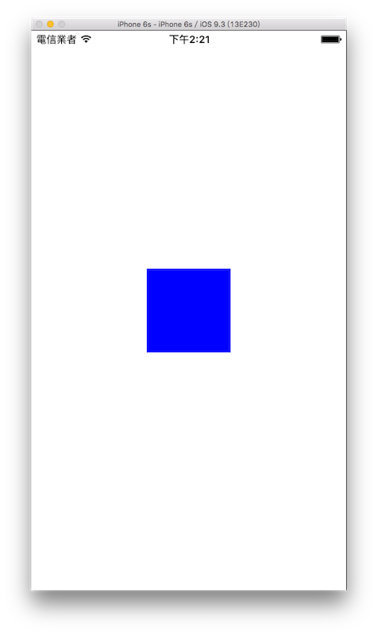

UIKit 初探
從這節起，我們會開始介紹如何使用 UIKit 框架來建構一個應用程式。
首先在 Xcode 裡，新建一個 Single View Application 類型的專案，取名為 MyFirstProject 。
▼ 已經有預先建立一些檔案在專案裡面，如下圖：

首先看到有兩隻 .swift 檔案：AppDelegate.swift及ViewController.swift，程式主要都是寫在這兩隻檔案裡面。
應用程式開啟時，會自AppDelegate.swift開始，這隻檔案負責應用程式的生命週期，像是啟動、閒置、進入後台、返回前台或是退出時要執行的動作。
接著看到 ViewController.swift ，是應用程式預設的主要視圖(View)控制器(Controller)，所有需要的 UI 功能(像是按鈕、文字或圖案等等)，都必須在這個 ViewController 裡面建立，通常會寫在viewDidLoad()這個方法裡面。
要如何建立 UI (User Interface使用者介面)呢？就是要用到內建的許多 UIKit 元件。
Hint
- 視圖(
View)指的是在裝置螢幕上會呈現出來的東西，像是文字、圖片、元件(按鈕、選單、列表之類)等等。 - 視圖控制器(
ViewController)則是負責資料的處理與編排設置視圖要如何呈現。 - 一個 UIViewController 負責一個畫面(即呈現視圖
View)的功能，未來如果有多個畫面時，就需要各自建立一個不同的 UIViewController。
隨處可見的 UIKit
在使用 iPhone 的經驗裡，你可能會發現很多應用程式的樣貌及使用方式都差不多，除了 Apple 官方提供了一些 UI 規則給開發者遵循之外，其實是因為大多數功能都是使用內建的 UIKit 元件就可以完成的。
iPhone 內建的設定 App 就是由許多的 UIKit 元件所組成，像是UINavigationController、UITableView及UIImageView等等，如下圖：

你也許可以觀察得到，這些元件都以UI為開頭，這是在 UIKit 設計時便特地命名的(也可以說是一種習慣)，讓你可以很輕易、清楚的明白你現在使用的東西的主要目的：這些元件都是用來建構 UI 的。
Hint
- 在往後的學習中，也可能會遇到一些有相同縮寫字母開頭的函式或類別，這都是在建立這些功能時特地命名的，所以你可以很清楚的知道哪些函式是用於同一種類型的功能。
建立第一個 UIKit 元件
最開頭的一開始，我們先介紹最基礎的一個元件：UIView，所有 UIKit 的元件(像是按鈕UIButton、文字UITextView等等)都是繼承自 UIView ，所以 UIView 其實很單純，只是有著每個元件都需要的、最基礎的屬性及方法。
要將元件放進畫面(即視圖View)中，需要了解有三個條件：原點、尺寸以及要疊加上去的父視圖。
原點
iPhone 的原點是以左上角為(0,0)開始向右( x 軸)跟向下( y 軸)，如下圖以 iPhone 6s 為例：

上圖表示整個畫面中四個角各自(x, y)的數值。
而每個元件的原點，都是以相對於父視圖的(0,0)為準，如果一個元件的原點為(100,200)，表示 x 軸相對於父視圖的(0,0)還要向右 100， y 軸相對於父視圖的(0,0)還要向下 200，如下圖：

尺寸
每個元件都可以設定自己的寬(Width)與長(Height)，而當有了原點及長寬之後，就可以構成一個矩形，也就是組合成了這個元件的形狀跟位置。
父視圖
建構一個應用程式的畫面其實就像疊積木一樣，最底下的就是基底，將元件一個一個疊在另一個元件上來完成。每個元件都必須疊加在一個父視圖上才能顯示出來，而最基底的視圖則是 UIViewController 的一個屬性，在其內的方法都可以用self.view來表示這個基底視圖。
以程式碼來完成
綜合上述元件的三個條件，可以用程式寫成如下：
// 定義一個 UIView 的常數 名稱為 firstView
let firstView = UIView(frame:
CGRect(x: 0, y: 0, width: 100, height: 100))
// 將 firstView 加入到 self.view
self.view.addSubview(firstView)
上述程式可以看到，定義一個 UIView 可以使用UIView(frame:)這個函式，函式的參數是一個CGRect，CGRect就是由一個原點(x, y)及一個尺寸(width, height)組成，這行即定義了這個元件的原點與尺寸。
接著可以看到在基底視圖self.view使用addSubview()方法來加入前面定義的這個 UIView，這樣就完成了將這個元件加進畫面的動作。
這個 UIView 對於其父視圖(也就是self.view)的原點距離為(0, 0)(其實也就是同一點)，而尺寸為(100, 100)(長寬皆為 100 )。
以相對尺寸來設置元件
接著介紹另一個工具：UIScreen，這主要是用來代表螢幕的資訊，通常是用來取得整個螢幕的尺寸，如下：
// 取得螢幕的尺寸
let fullScreenSize = UIScreen.main.bounds.size
上述程式中，UIScreen.main表示的是主畫面的資訊，其內有一個屬性為bounds，bounds又包含了兩個主要屬性：origin及size，分別是主畫面的原點及尺寸。
- origin：有兩個屬性
x及y，也就是原點。通常會使用CGPoint(x:,y:)來設置一個點。 - size：有兩個屬性
width及height，也就是尺寸，通常會使用CGSize(width:,height:)來設置一個尺寸。
而往後都會利用這個主畫面的尺寸來為每個元件設置相對的位置。
Hint
- 因為本書所有畫面都是用純程式碼構成，為了可以較為彈性的適用各尺寸 iPhone ，所以大多會以相對於整個螢幕畫面尺寸來設置 UIKit 元件的大小及位置。
在獲得了螢幕的尺寸以後，我們來將前面定義的 UIView 設置一個新的位置：
// 設置 UIView 的位置到畫面的中心
firstView.center = CGPoint(
x: fullScreenSize.width * 0.5,
y: fullScreenSize.height * 0.5)
上述程式可以看到，使用了 UIView 另一個屬性center，這代表著這個元件的中心點位置，也是以(x, y)來表示，所以可以用CGPoint(x:,y:)來設置一個新的點。這邊便以前面所取得的螢幕長與寬的一半數值來設置，這樣這個 UIView 便會被放置在畫面的正中央。
最後為了讓這個 UIView 可以明顯表示出來(不然原本都是白色，看不出來在哪)，為它加上一個底色：
// 將 UIView 的底色設置為藍色
firstView.backgroundColor = UIColor.blue
這邊提到了 UIView 的一個屬性backgroundColor，是用來表示這個元件的底色。
而要設置成什麼顏色，就要用到另一個工具UIColor，用來產生顏色。UIColor已經內建許多直接產生顏色的方法，像是上面寫的UIColor.blue就是藍色，或是可以使用UIColor(red:,green:,blue:,alpha:)來產生一個 RGB 顏色。
以上便完成了這節所要說明的內容，最後使用模擬器來看看成果，如下：

自動完成功能
在這節的學習中，你可能會發現當打字打到一半時，會出現下面這樣的提示：
這是 Xcode 內建的一個方便功能，你可以在尚未打完一個單字時，它會自動顯示這個列表，讓你使用上下鍵來選擇並完成這個單字(像是元件、屬性或方法)。
如果選擇的是方法或函式時，它完成後同時會提示你每個參數的型別為何，相當方便，如下圖：
有時候它不一定會自動出現，這時你可以按下esc鍵來顯示這個自動完成功能：
如上圖在單字打到一半時，不會自動出現，便可以自己按esc鍵來顯示(你甚至可以都打小寫英文，也是可以找到)。
查找文件
如果對於一個元件、屬性或方法不熟悉，可以按著option鍵(游標會變成一個問號)再用滑鼠點選你有疑問的方法或屬性(像是按住option鍵再點UIView或bounds等等)，會列出更詳細的說明，如下：
或是你也可以開啟右側側邊欄，點選右邊的頁籤，當你游標指到一個元件、屬性或方法時，這邊便會顯示詳細說明，如下：
Hint
- 如果將 iPhone 6s 模擬器整個螢幕的 width 及 height 用
print()印出來，你會發現寬與長分別為 375 與 667 ，但它實際的尺寸其實是 750 x 1334 ，這是因為單位不同。在程式中使用的單位是點( Point )，而實際尺寸是 像素( Pixel )，剛好是兩倍，也就是以 iPhone 6s 來說，一個點會包含 2x2 個像素。
範例
本節範例程式碼放在 uikit/uikit_intro